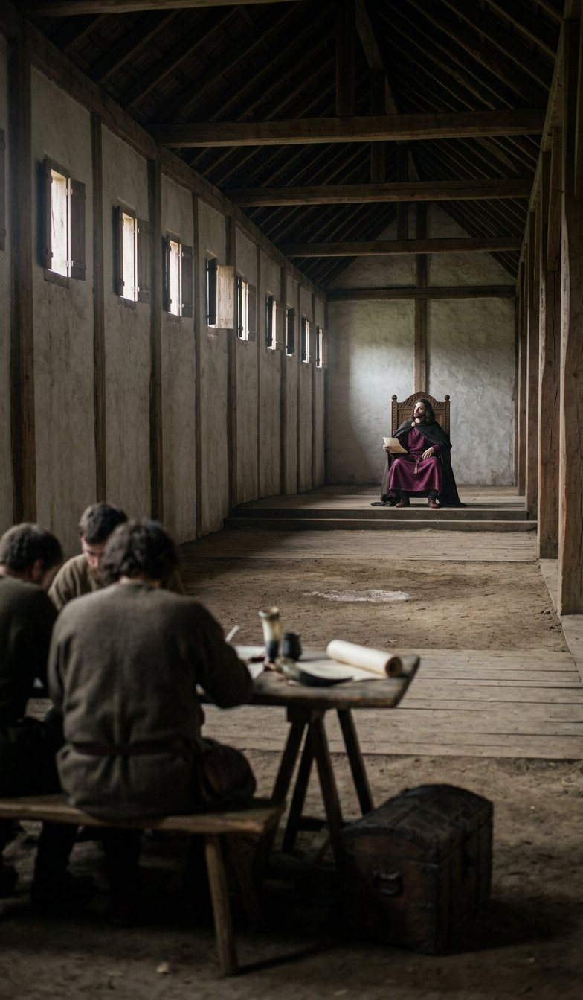
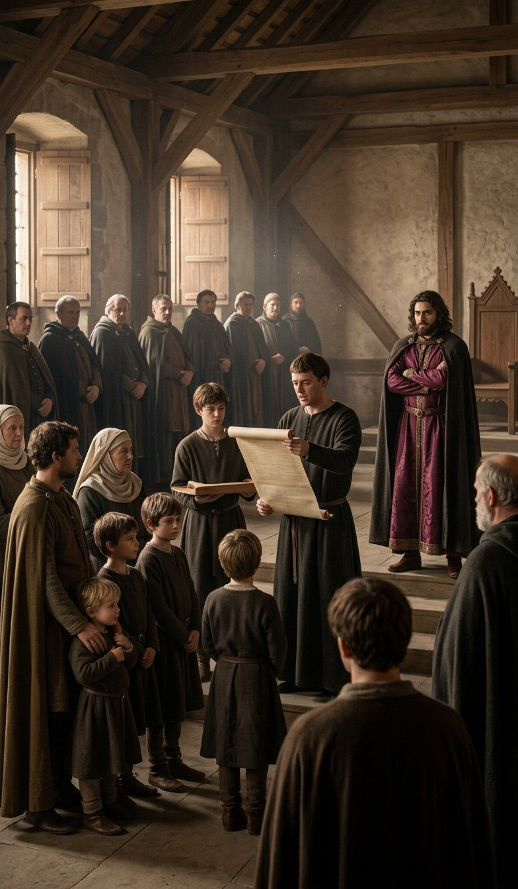
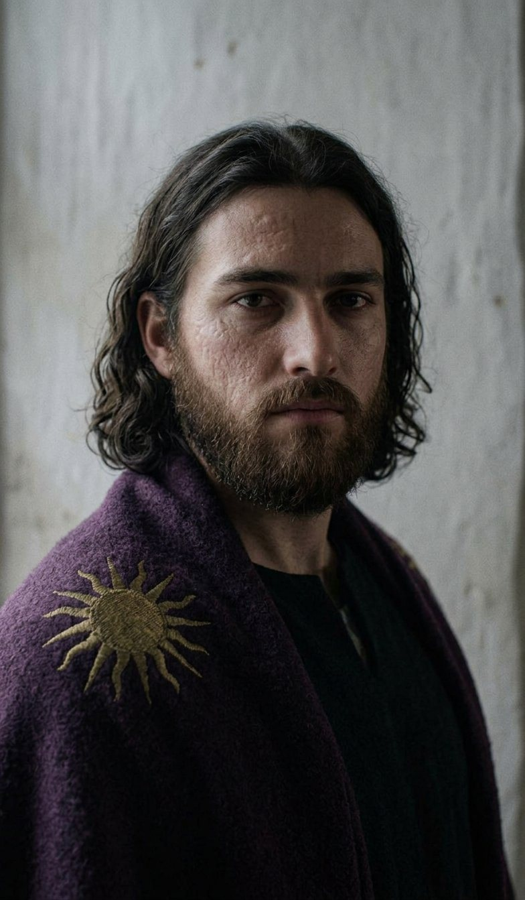
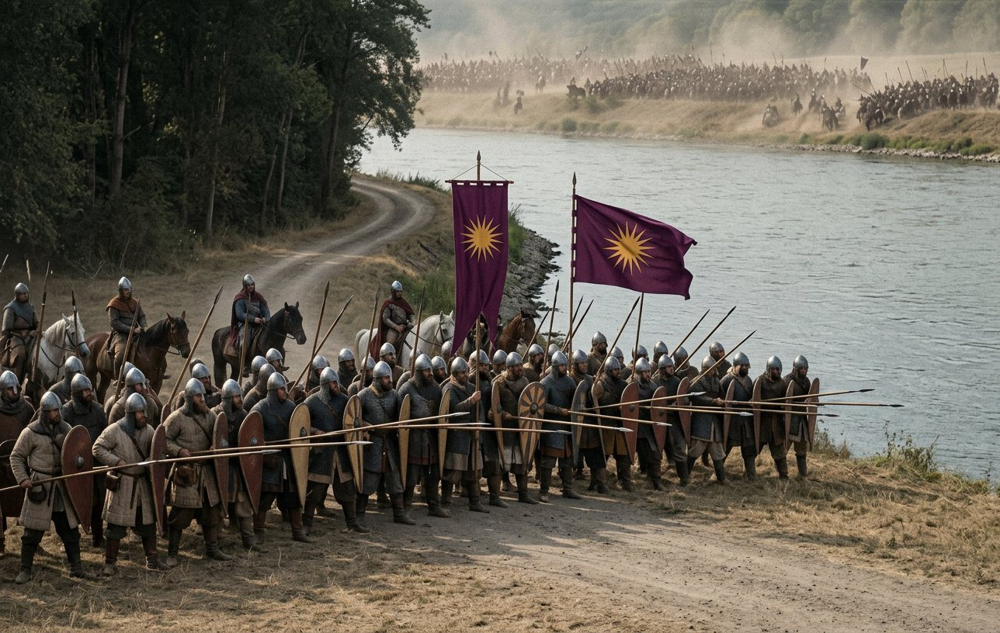
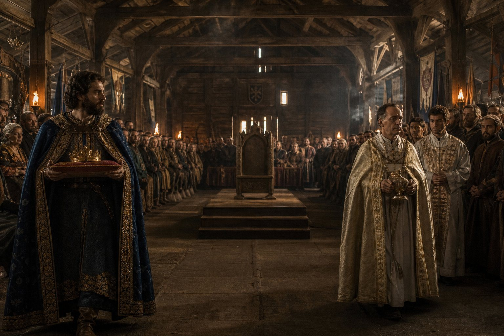
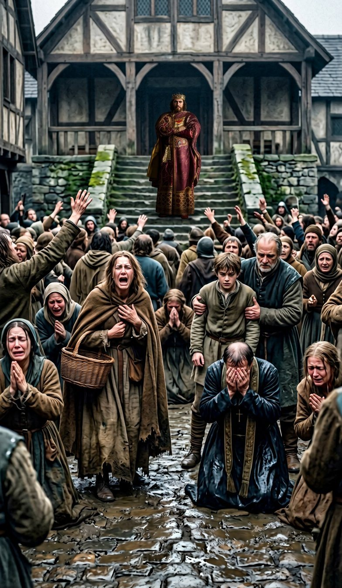
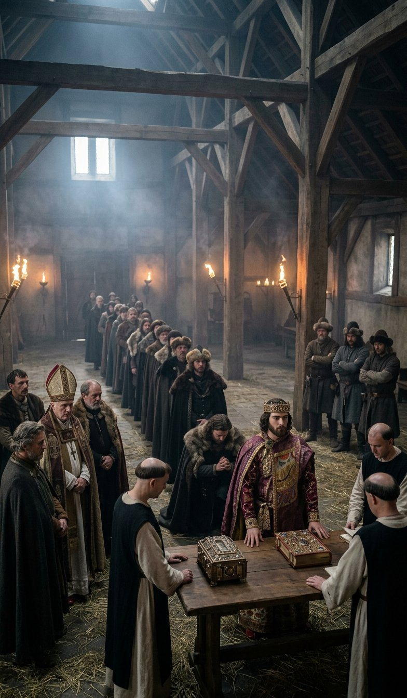
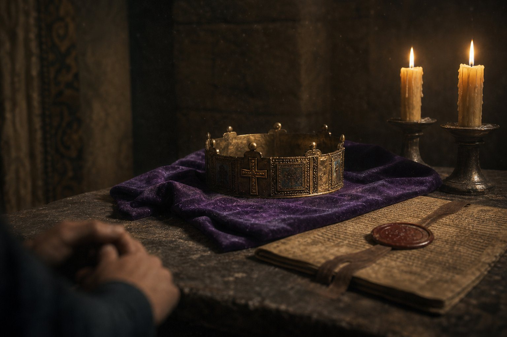
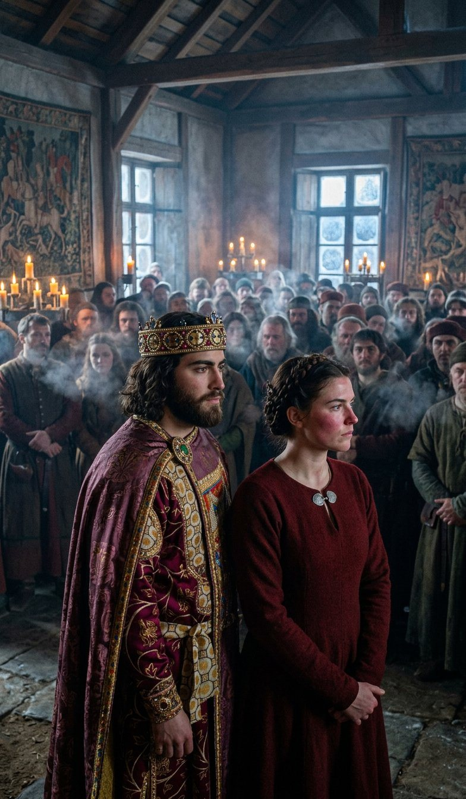

The first day of the seventh month of 920
Edouinos Silviades was buried at Regensburg in the last days of the sixth month of 920, and on the first day of the seventh month the record stops writing about him.
That is not a figure of speech. The entries for the first day of the seventh month are about Antiphates. Nothing is said about the change and there is no line between the two men; the chancery of Bavaria did not stop to bury anybody, it wrote the next king's name at the top of the next page and went on counting.
I am Laurentios. I wrote the last nine days of the fourth volume and I am writing this one, which is the first chapter of the fifth, and the reader who has come this far knows the shape of my hand by now: I count things, I say when I do not know, and I have never been able to write a death scene.
Before anything else, a correction, because I have found one and it is mine. In the last page of the fourth volume I wrote that the new King of Bavaria was seventeen years old. He was not. He was born at Krassó on the twenty-third day of the fourth month of 902, in a tent, in the middle of a muster, and on the twenty-eighth day of the sixth month of 920 he was eighteen years and two months old. I have put it right here and I have not gone back and made the earlier page tidy. A ledger that is tidied afterwards is not a ledger, and this book has printed its own mistakes before rather than mend them quietly.
Eighteen years and two months. Two years a grown man, two years and a month one of the realm's champions, and the marks of the smallpox on his face and on both hands since the fifth month of 919, which is the only thing in this history that happened to him that he did not do himself.

Here is what a kingdom is on the day after a king dies, and I want it written plainly because the rest of this chapter is about a boy of eighteen doing something about it.
Twenty-nine men held land directly of the crown of Bavaria on the twenty-eighth day of the sixth month of 920. Every one of them held it of a dead man. A vassal's oath dies with the lord: that is not a Bavarian custom, it is the whole of the Latin world, and it means that on the morning a king dies his kingdom becomes a list of men who owe nothing.
Eighty-eight counties. A duchy. Twelve counties of the crown's own, of which four were in the crown's hand and eight were in the hands of children. An army of some thousands that had been paid on time for nine years. A holy war declared against his father by a king of East Francia on the fifteenth day of the fourth month of 920. And a church in his own country that had not forgiven the crown six days after it was made in 907 and had not forgiven it in the thirteen years since.
A realm is not a thing that passes. It is a thing that has to be picked up, by hand, by somebody, in the week after.
The custom
Bavarian custom is that a king's lands are divided among his sons. It is an old custom and it is a good one for a family and a bad one for a country, and every German king of the last hundred years has known that and most of them have done it anyway, because the alternative is a war between brothers in the first spring.
So in the seventh month of 920, in the hall at Regensburg, the royal lands of Edouinos Silviades were read out and divided, and I was in the hall and I have the list.
It is short. That is the first thing to say about it, because his father held fourteen titles on the day he died — a kingdom, a duchy and twelve counties of his own, and I have counted them four times in four different parts of this ledger — and his son came out of the hall holding six.
The Kingdom of Bavaria. The Duchy of Bavaria. Regensburg. München. Geisenhausen. Aquileia.
That is the crown. Six titles where there were fourteen, and the eight that went are the counties, and the counties are where the money and the soldiers are, and I am going to set down where each of them went and then say the thing that nobody in that hall said out loud.

Falkenstein to Chairestratos, who is fourteen, who was born at Linz on the third day of the first month of 906, and who has been a duke since he was four years old and has never in his life been to Krain.
Passau to Euthykrates, who is twelve. Jihlava and Znojmo he already had, since the sixth day of the fourth month of 916, when he was eight and the combined age of the three boys who were given six Moravian counties was eleven.
Graz to Philotas, who is six. Rottenburg to Demetrios, who is two, and who also has Erbach, taken off the war of 919.
Mürzzuschlag to Edouinos, who is four, and who was born at Kruszwica in Poland on the seventeenth day of the seventh month of 915, in a tent, in the middle of a tournament.
And Trier to Edouinos, who is three, and who was born at Regensburg on the eighth day of the first month of 917, and who is the other one.
That is ten of the twelve. The record does not say where the other two counties went and I am not going to give them to anybody. I have looked for them in three columns and they are not in the columns, and a man who hands out counties the record has mislaid is a man writing a different book.
Now the thing that nobody said out loud, in a hall in which there were at least nine adults who could count.
The King of Bavaria's own lands on the twenty-eighth day of the sixth month of 920 were twelve counties. On the first day of the seventh month they were four. His father had held a third of his realm in his own hand and his son holds a twenty-second of it, and the realm is the same eighty-eight counties it was the week before.
That is what the custom does. It is not a plot and there is no villain in it; it is a rule, applied by honest men, in one afternoon, and it moves two thirds of a crown's strength into the hands of six boys whose combined age is forty-one.
And the eldest of them got nothing, because he got the crown, and everybody in that hall knew that a crown in 920 is not land.
Eighty-eight counties
Eighty-eight counties, and the seventh largest realm in the world out of six hundred and thirty-six, and I have written that sentence in this book before and I am going to unpack it once, here, in the chapter where the unpacking costs somebody something.
A county in this ledger is a place with a man in it who can be told to come with his men. Eighty-eight of them are held by twenty-nine men. Those twenty-nine men are the kingdom, and they are not one thing, and the record calls them all vassals and the word is a lie of convenience.
There are the bishops. The Chalcedonian church in Bavaria holds land the way the church holds land everywhere and it has never accepted that the man on the throne of Bavaria is a Hellene who prays in a rite it considers worse than no rite at all. In 908 a woman called Heilwich put an army of that grievance into a field in Bavaria and lost, and she is alive in 920 and she is forty-one, and I have looked her up in the roll twice this month for reasons the reader can supply for himself.
There are the German lords of the old counties, who took an oath to a Greek in 907 because there were two thousand men outside the wall, and who have been correct and punctual for thirteen years and who are waiting, in the way that men of property wait, to see which way a thing falls.
There are the marches: the Slav counties taken since 909, held by the King's own men — a Greek called Xenophon has had Slavonia since the twenty-second day of the eighth month of 913, and had never been in this book before that day and is in it a great deal now.
There are the six brothers of the King, who are four, twelve, thirteen, fourteen and two and four years old, and whose counties are administered by whoever the Queen and the chancery put in them, and who will be men in eleven years.
And there is the company, which is not a vassal at all and which gave the crown its First of the Vanguard, its Pontifex, and its two best soldiers, and which holds, at the end of 920, no land whatsoever outside the counties the crown gave its sons. Benedetto, who is First of the Vanguard, holds nothing. He has held nothing since the eleventh day of the fifth month of 915 and he has been the best soldier in Bavaria for five years.
That is the realm: a crown with four counties, a church with a memory, twenty-nine oaths held by men of four different nations, six children, and a company that owns nothing and does everything.
I have been tolerated in eleven countries in sixty-two years and I am going to say the thing plainly for the last time in this book. This kingdom is enormous on the map and it is not a country. It will not be a country in the King's lifetime. It may not be a country in mine, and I am sixty-two.
The father knew it. That is the whole of why he gave counties to infants: a child cannot rebel, and a man who is building a family instead of a nation has to hand out the map to his own blood or watch a duke take it.
And on the first day of the seventh month of 920 the family took two thirds of the map, by custom, in an afternoon, in a hall, and the boy who was left with the crown was eighteen years old and had two guardians and a war.
The war he did not declare
On the fifteenth day of the fourth month of 920, Friedrich the Forgetful declared a holy war for the Kingdom of East Francia.
I explained in the last chapter of the fourth volume what a holy war is and I am not going to explain it twice; the reader who wants it can turn back nine pages. What matters here is the date. It was declared seventy-four days before his father died. The defender of a holy war is the man against whom it is declared, and that man was Edouinos Silviades, and on the twenty-eighth day of the sixth month of 920 the defender of that war died of an illness in a bed with the shutters open.
A war does not die with a king. The crown of Bavaria is the defendant and the crown of Bavaria passed, and so the holy war became the inheritance of a boy of eighteen who had never commanded anything larger than a raid, and who had, in his own person, precisely one military distinction: he had survived an illness that kills one man in three.
I want to be careful here, because this is where a lesser book would write a scene in which the young king is told about the war and rises to it. The record does not give that scene. The record gives a war that is still running on the first day of the seventh month of 920 and a crown that is still the defendant, and it gives no moment of decision at all.
What the record does give, in the ninth month, is an army in the field. So something was decided between the first day of the seventh month and the first day of the ninth, and the record does not say what, and I am going to tell the reader what I believe and mark it as belief.
I believe that in the first week of the seventh month of 920 there were men in that hall who advised the new King to make peace with Friedrich. They would have been right to. A kingdom whose crown has just lost two thirds of its own lands, whose vassals owe nothing until they swear, and whose king is eighteen and marked, is not a kingdom that goes looking for a battle with eight thousand men. Peace with Friedrich would have cost counties that were not Bavaria's before 918 and it would have kept the crown.
And I believe the King refused, and that the reason was not courage and not the church and not honour, and was this: that a new king who gives away land in his first month gives away the next thing in his second. The realm had twenty-nine men in it deciding, in the winter of 920, whether to renew an oath to a boy. A peace in the seventh month would have answered their question for them.
That is a reading. It is my reading, made in the seventh month of 920 and written in the first month of 921, and I have set it down knowing that the reader can weigh it against the only fact there is, which is that in the ninth month the army of Bavaria went west.
The King at eighteen
I am going to write down what he was like in that winter, because I have been in this company since 897 and I have watched him since he was five years old and I am one of perhaps four people alive who can say what he was like before he was a king.
He was quiet. That is the first thing and it is the thing people who met him once went away saying: the King of Bavaria is quiet. He had been quiet at eleven when his father made him sit in on a survey of prices. He had been quiet in Rome at six, under the great church, asking what it had cost.
He was just, in the small way that is tedious to live with. He gave judgements in the hall at Regensburg all that autumn, on land and debt and one killing, and he gave them with reasons, and the reasons were shorter than the law and everybody preferred them.
He was compassionate in a manner that surprised the household, because his father's compassion was famous and theatrical and came out of him in great warm sentences, and the son's was a thing he did with his hands: he went down to the winter quarters twice a week and sat with the sick of the household, and after the smallpox nobody in Regensburg thought that was a pose.
He was reckless. He had been reckless since he could walk and the record puts the word on him in the same list as just and compassionate and stubborn, and the reader should hold that word while reading the next section, because the battle of Mainz is a reckless battle fought by a careful boy and I do not know how to account for it and I am going to describe it and let it stand.
And he carried, in the record's own list, two words that no crowned head in Latin Europe carried in the year of grace 920: a reputation for witchcraft, inherited from his father along with the crown, the sun on the purple, and the enmity of every bishop from Regensburg to Rome.
He also carried a Confucian education, which is a sentence I have written in this book before and which I will explain once, here, and never again. The Emishi who taught his father to read taught the son: the same books, in the same language, out of the same chest that came off a wreck on a beach at the far end of the world sixty years before. There were perhaps nine men in Europe who could read that language in 920. Two of them had taught the kings of Bavaria and one of them, Shiina the Noble, had died at seventy-five on the fifteenth day of the first month of 920.
So the King of Bavaria, at eighteen, was a boy with the marks of the smallpox, a reputation for witchcraft, a Chinese library, two guardians, a just mind and a reckless streak, in a German country, in a Latin church, with a Greek name, and he had been told since he was four years old that he would have to hold this.

Mainz, the first day of the ninth month of 920
The army of Bavaria crossed the Rhine at the end of the eighth month and fought at Mainz on the first day of the ninth month of 920: four thousand six hundred and ninety-nine of ours against seven thousand nine hundred and fifty-three of Friedrich's, four hundred and sixty-one of ours dead against one thousand nine hundred and sixty-nine of his.
I was there. I was in the second line with the household and I carried a spear I am too old to use properly, and I want to say at the start that I did not see the King during the battle and I did not see the battle as a whole. What I saw was a hill, a wood, a great deal of noise on my left, and the back of the man in front of me for six hours. Everything else in this section is what I have assembled since, out of the roll, out of Benedetto, and out of the field.
Here is the arithmetic, because the arithmetic is the story. Seven thousand nine hundred and fifty-three against four thousand six hundred and ninety-nine is not a small advantage; it is the advantage a man takes into a field when he means to win by weight. Friedrich had it and did not win with it, and the reason is that he could not get it onto us all at once.
The road and the river at Mainz come together and then do not run parallel, and there is a place east of the town where both bend, and the army of Bavaria stood in that bend with its back to the water for the whole of the day.
I have thought a great deal about that order. It is not a clever order in the way that a soldier means clever; a clever order is one that wins with fewer men because of a hill. This was an order that said: we will take the whole weight, here, and we will not move, and the river behind us will make sure that nobody moves.
Four hundred and sixty-one men dead to one thousand nine hundred and sixty-nine. One in ten of ours; one in four of his. And I have set the Gleichenstein numbers of the fifth month beside them, in my own head, a great many times: his father's last battle was five thousand and sixty-one against three thousand and eighty-eight, a hundred and eighty lost against twelve hundred and forty, and it was a bigger and a better victory and it was fought by a dying man in a chair.
Both things are true: the son fought the harder battle and lost a fourth of an army to his father's seventh, and the son won.

What did the boy of eighteen actually do, on the first day of the ninth month of 920? He offered battle outnumbered nearly two to one and he did not lose it, and I have come to the conclusion, after a winter of asking men who were in the line, that he did four things and only one of them was a soldier's.
He put Benedetto, who is First of the Vanguard and holds no land, in the front of the left, and told him to hold and not to be drawn. Benedetto held. There is no subtlety in that and it is the whole of the battle.
He kept two hundred horse out of the fight until the ninth hour, and nothing in the record says who told him to or whether it was his idea, and the two hundred horse came out of the bend of the road at the ninth hour and turned the left of Friedrich's line, and that is when one thousand nine hundred and sixty-nine men died.
He did not go into the line himself. His father went into the line himself: the record has the word wounded against him twice, in the tenth month of 883 and in the fifth month of 905, and a man does not earn that word twice from the second line. It is a great deal easier to be a legend when you are willing to be killed.
And after it was over he walked the field. He walked it for three hours in the dark with a lantern and two clerks and had the dead counted by name and not by company, which is the fourth thing and the only one I would call a soldier's.
I have written the word reckless about him and I will not withdraw it. But the recklessness of the first day of the ninth month of 920 was not the recklessness of a boy who thinks he cannot die. It was the recklessness of a man who has worked out that if he does not fight this battle in this place, he will spend the next five years explaining why he did not.
Two men who could not be in the same room
In the ninth month of 920, with a war running and the harvest in, the crown of Bavaria had to be put on the King's head, and to do it the realm required the services of two men who could not be in the same room.
The first is Xenophon, Duke of Slavonia, who is a Greek, and who was given Požega, Vukovár and Zagreb on a single day in the eighth month of 913 and has been the crown's most competent servant in the east ever since. I knew him in the company. He was a good officer and a cold man, and he came out of nowhere in the record in 913 the way our kind do, with three counties after his name and no explanation before it.
The second is Theodelinda, the Pontifex, whom the reader has not met because she is not in this book before the ninth month of 920, and about whom the record gives me a title, a name and a great deal of conduct, and no country and no birth.
These two disliked each other. The record does not say why, and I have asked two men who were at Regensburg that winter and neither of them would say why, and one of them said: you had to be there, and the other one laughed. I am not going to invent a quarrel for them. It is enough for this history that two of the three great officers of the crown could not be put in the same room.
And a coronation in Bavaria is not one act. There is the crown, which is a thing a great lord puts on a king's head, and there is the chrism, which is a thing a pontifex does, and since 907 both had been done by whoever was to hand. In 920 the realm had a duke who could do the first half in the way that lords understand and a pontifex who could do the second half in the way that the church understands, and no one man who could do both.
So somebody — and the record does not say who, and I will name nobody — spent the eighth month of 920 talking two people who could not be in the same room into standing in the same room, on the same day, in front of twenty-nine vassals and a foreign war, and performing the coronation of Antiphates of Bavaria as a pair.

I saw them do it. I am going to describe it and then I am going to stop, because a great many books would make this into a comedy, and it was not a comedy; it was the most expensive piece of politics of the young King's first year.
They came in from opposite ends of the hall. Xenophon wore a Greek coat and carried the crown on a cushion, which is a servant's office dressed as a lord's, and he carried it correctly, at the height the master of ceremonies had told him, and did not look at her. Theodelinda came up the other side with the chrism and her own people and did not look at him. They met at the step in front of the throne, and they stood on it together, one on each side of the King, and between them they were a whole coronation and neither of them was the whole of one.
And when it was done the Duke stepped back and the Pontifex stepped back and the two of them went out of the hall by different doors, in front of the whole realm, and everybody in that hall understood the sentence that had just been pronounced in Latin and in silence: that the crown of Bavaria needs both of them, and that neither of them can do it alone.
That is worth more than a room. That is the precariousness of this kingdom, written in a ceremony, by two people who would rather have been anywhere else.
The fifteenth day of the tenth month
The record gives the coronation of Antiphates of Bavaria as a season and not as a day. It begins in the ninth month of 920 and it ends on the first day of 921, and inside it the chancery has entered four dated things, and this chapter has taken them in order and is now at the first of them.
On the fifteenth day of the tenth month of 920, at Regensburg, the record says that crowds of locals fell into ecstasy at the sight of the king.
That is the whole entry. Six words in the Latin of the chancery, and no explanation, and no name, and no number; and the record is a document that gives numbers for grain.
I was in that square. I am going to write what I saw and I am not going to explain it, and the reader should know that I have had four months to think about the explanation and have not got one.
It was the day the crown was set on him, and the two of them did it, and the hall was full and the square outside the hall was fuller, because in a coronation the important people are inside and the town is outside, and the town had been standing in the cold since the morning.
When they brought him out onto the step, a woman in the front began to cry out. Not words. She was a woman of fifty or so, in a good brown cloak, and she had a basket on her arm, and she began to make a sound and then to say something that no one near her could make out.
It went through the square the way wind goes through barley: not one direction, all at once, in patches, and then the whole field of it at once.
Men went down on their knees in the mud. There was a wheelwright's apprentice at the corner of the street who could not stop shaking and whose master held him by both arms. A priest — a Chalcedonian priest, in a country whose crown is a Hellene — was on his knees with his hands over his face. I saw a soldier of the household, a man I have drunk with for six years, weeping on his feet with his mouth open, and he was not the only one.
And I did not feel a thing. I want that written down as well. I stood in the second rank of the household with my hands behind my back and watched eight or nine hundred people go out of themselves at the sight of a boy of eighteen with the marks of the smallpox on his face, and I felt nothing at all except the particular cold a soldier feels when a crowd does something he cannot account for.

What the King did was nothing. He stood on the step and let it happen. He did not raise his hands, he did not speak, he did not turn to the men behind him, and I have since heard it said that he was frightened, and I believe it, and I have also heard it said that he knew exactly what he was doing, and I do not believe that at all, because a man who knows what he is doing in a crowd like that says something.
Afterwards he went into the house and did not come out until evening, and the two men who had crowned him went out of two doors, and the crowd stood in the square for an hour after there was nothing left to see.
Now the reader is entitled to a reading and here is mine, marked as mine.
His father, in the first month of 909, preached the Wrath of Zeus in the open air in Rome to three hundred people, in Greek and in bad Italian, for four exchanges with an old woman in the front — the whole of his religion, in his own voice, with his own arguments, in the middle of the Latin church's own city. And nothing happened. Nobody wept, nobody knelt, nobody was cured, and the reader will remember that the record's verdict on that day was that two hundred of the three hundred were ours.
The son says nothing, does nothing, claims nothing, and at eighteen has a country on its knees in the mud in front of him for six words in a chancery.
That is not a gift and it is not a grace. It is the most dangerous thing that has happened to this dynasty since 907, and every bishop in Germany heard about it inside a month, and it was heard in the same month as a war and a crown and a wedding.
Because a crowd that goes into ecstasy at the sight of a king is a miracle if you like the king and a riot if you do not, and by the fifteenth day of the tenth month of 920 the bishops of Bavaria had been looking for eleven years for a word to put beside the word witch.
Sayn, the first day of the eleventh month
Seventeen days later the army of Bavaria fought again, at Sayn: five thousand seven hundred and eighty-nine of ours against six thousand and ninety-five of Friedrich's.
The record gives no dead. Neither army's. It gives the two numbers and the place and the day and then it goes on to the pledges of loyalty without a line between them, and I have read that page thirty times looking for a smudge.
So the book invents nothing, and the section on Sayn is short, and what I have to say about it is arithmetic and one observation.
The arithmetic: five thousand seven hundred and eighty-nine is the largest army the Kingdom of Bavaria ever put into a field. Larger than the three thousand nine hundred and twenty-seven of Beichlingen, larger than the five thousand and sixty-one at Gleichenstein, larger than the four thousand six hundred and ninety-nine at Mainz seven weeks before. A boy of eighteen, in the fourth month of his reign, in a realm whose crown had lost two thirds of its own lands in the seventh month, took five thousand seven hundred and eighty-nine men across the Rhine on the first day of the eleventh month of 920.
That is where the counties went. That is what it means that a hundred and nine Bavarian names were on a roll in 915 and that the company was paid on time for nine years: the machine his father built did not need his father in it. The reader has watched a company become a kingdom across four volumes and here is the dividend, in one line, in the hand of a clerk, with no dead in it.
The observation is this. Marburg is the only battle this realm has ever lost, and every other one of them in thirteen years has its dead in it, down to the hundred and eighty at Gleichenstein. Sayn is the only battle in the whole of this history in which not one man on either side is named, numbered or buried. I do not know why the record has no dead for it. It may be that it was a march and a stand-off and a withdrawal. It may be that the clerk was tired. It may be that a good many men died at Sayn and the ledger of Bavaria simply did not stop for them, and I have watched this record not stop for people before, and so have the readers of four volumes.
Four days after Sayn, the King of Bavaria received the pledges of his vassals.
The fifth day of the eleventh month
On the fifth day of the eleventh month of 920 the twenty-nine men who held land of the crown of Bavaria came into the hall at Regensburg and swore to Antiphates.
Five of them led it. The record gives the five in the order it gives them, and I am going to take the five in that order and say what I know about each, because this list is the most important list in the fifth volume and it looks like a list of names.
Prijezda, called Pontifex, who came into the company before I did and took Bereg off Domoszló in a wet field in the tenth month of 889, and who stood in a hall in a mitre in 907 and was, in the record's phrase, an addition to the magnificence. He is a man of the old company, he has been in this book since before the crown, and on the fifth day of the eleventh month of 920 he went up first, in front of twenty-eight lords of Bavaria, as the church.
Kleandros of Goslar, who came to the crown in the seventh month of this same year 920, in the settlement of the Thüringian war, and who had therefore been a vassal of Bavaria for four months when he led the pledges of Bavaria. That is not a mistake in the record and it is not a mistake in this chapter. It is the whole of the King's policy in one line: the men who were paid for in the summer lead the hall in the winter.
Budimír the Wicked. That is the record's whole entry for him in this year: the name, the epithet and the pledge. I have looked for him in the roll and in the chancery and there is nothing, and I am not going to make him a story. He is called the Wicked by a chancery that did not use words like that, and he is one of the five men the new King of Bavaria chose to stand at the front of his hall, and both of those things are facts.
Theodelinda, Pontifex, who had crowned him twenty-one days before from the other side of a step, and who went up fifth in a list of five and did not look at the Duke of Slavonia while she did it.
And Euktemon, whom the record gives a name and a pledge and nothing else.
I have set those five down at length because the five are the answer to a question the reader has been carrying since the seventh month: what does a boy of eighteen do with twenty-nine men who owe him nothing? And the answer is that he puts five of them at the front of the hall — the church, a brand-new count, a man with a bad name, the other church, and a stranger — and makes the other twenty-four walk past all five of them to swear.

Twenty-five of the twenty-nine swore. Four did not.
Their names are Ludwig, Wilbert, Bohodar and Adalhard, and I am going to write them out in a row and ask the reader to remember them, because in this book four names in a row at a pledge is not a footnote. It is the record doing the one thing the record almost never does, which is to leave a door open in a wall and not say what is behind it.
Ludwig is the third Ludwig in this history and I have written a note about the three of them, and the reader who wants the whole of it can have it there. This one is the lord of the pledge of 920; the others were a lord of de Montjoie in 906 and an East Francian in 911. Whether this Ludwig is anyone in particular beyond a name in a list, I do not know, and I have not joined him to either of the other two on the strength of a name, which is a thing this book has refused to do since Rivai.
Wilbert, Bohodar and Adalhard are three names. Bohodar is a Slav name and the other two are German, and that is the whole of what the record gives me and the whole of what I will assert.
What did they do? They came, and they did not swear. Nobody was killed and nobody was imprisoned and nothing was taken off them: the record has no sequitur after their names, no confiscation, no war, no fine, and on the sixth day of the eleventh month it goes on to the Macedonian Crown as though four of the twenty-nine vassals of Bavaria had not just refused their homage in a hall in front of everybody.
The King did nothing. That is the fact, and I have thought about it all winter, and I have come to believe that doing nothing was the only thing he could do and that it was the coldest decision of his first year. A new king who punishes four lords in the eleventh month of his reign for not swearing teaches the other twenty-five what an oath costs. A new king who writes their four names down and lets them walk out of the hall teaches them something else entirely, and I have been a soldier for forty years and I could not have done it.
The eleventh day of the eleventh month
On the eleventh day of the eleventh month of 920 the Macedonian Crown was devoted to Bavaria, to be inherited with the kingdom from now on.
Devoted is the record's word. It is a chancery word and it is doing a great deal of work in one line, and I am going to unpack it and then admit what I do not know.
I do not know what the Macedonian Crown looks like. It is not described in the record, it was not in the hall, and in the whole of my time in that household I never saw it. What the line does is take a thing which is a man's own — which would go, on his death, to whichever of his sons the custom or the will gave it to — and make it the kingdom's: from the eleventh day of the eleventh month of 920 the crown of Macedonia goes with the crown of Bavaria and not with the man who wears both.
That is what the line is for. Six weeks earlier a boy of eighteen had watched his father's fourteen titles become six by custom, in an afternoon, in a hall. On the eleventh day of the eleventh month he took one thing out of the reach of the custom and nailed it to the crown, and he was eighteen years old, and it is the only act of his first year that I would call a plan.

There is a second reading and it is the one I prefer, and I mark it as a preference. The Macedonian Crown is the crown of a kingdom that a Macedonian Hellene took in the fifth month of 907 and that nobody in Latin Europe ever accepted he had any business wearing. Devoting it to Bavaria is a way of saying: this is not the ornament of a foreigner who happens to be your king. It is part of the furniture of the kingdom now. It will be on the head of the next king of Bavaria whether that king is a Hellene or not, and in a hundred years there will be nobody left who remembers that it came from anywhere else.
The twenty-first day of the eleventh month
On the twenty-first day of the eleventh month of 920, in the middle of his own coronation, the King swore an oath of conquest.
His father did it on the thirteenth day of the twelfth month of 907, in his own hall, five months into being a king, and Matako wrote the sentence the reader has already met: a man who had spent thirty-five years being hired to win other men's wars stood up in his own hall and swore that he would take more.
I was in both halls. I am one of perhaps three people alive who were in both halls, and I want to put down the difference, because the difference is the fifth volume.
The father swore it with nothing. He had a kingdom six months old, a church against him, a rival in the west and a reputation. He swore he would take more, and then he took: Slavonia, Friuli, Athens, Moravia, the Rhine. Everything in the fourth volume that is not a pilgrimage is that oath being kept.
The son swore it with everything. He had eighty-eight counties, a war won twice in the field, a crown devoted to a kingdom, twenty-five oaths in his pocket and four names in a column. And he swore the same oath, in the same hall, in the same words, and I stood at the back and thought: you have nothing left to take that is not being held by somebody who is watching you.
That is not a criticism. It is arithmetic. His father's oath was a promise to a realm that expected very little; his is a promise to a realm that expects exactly as much as the father delivered. I have watched him do it and I have watched his face while he did it, and it was the face of a man reading out a sum.
The twenty-fifth day of the twelfth month
On the twenty-fifth day of the twelfth month of 920, at Regensburg, Antiphates of Bavaria married Dusica.
She was twenty-two. She had been born on the twelfth day of the fourth month of 898 and she was four years older than her husband, and the record gives her the date of her birth, which is more than it ever gave for the Queen his mother, and gives nothing else at all: no father, no house, no country, no dowry, no bishop and no journey.
I have written four volumes of this history and in the first of them a Macedonian Hellene married a woman whose origins that same record does not give, and I have watched three narrators refuse, in three different hands, to invent them. I am the fourth and I am not going to be the one who breaks it. She came from somewhere. Somebody arranged it. Both of those sentences are true and neither of them is a fact.
What the record gives her instead is five words: a tough soldier; a pillager; robust; impatient; lustful.
This book prints the record's words about a man whole and unedited — adulterer, witch, miracle worker, golden sovereign — and it has printed them since the fourth volume, and it is not going to soften five words about a woman of twenty-two because they are about a woman of twenty-two. A tough soldier, in a chancery that uses the phrase about men who have been in the line. A pillager. Robust, which for a queen means what it means. Impatient. And lustful, which is the record's word and not mine, and which I set down here beside a husband of eighteen with the marks of the smallpox on his face and a reputation for witchcraft, and let the reader do his own arithmetic in his own time.

I was in the hall. The frost had got into the cellars that year and the wine came up cold and there were two hundred people in a room built for one hundred and fifty.
The King was in the hall for the whole of it, which the reader will have noticed by now is not the same as being at it. He had given the year to a war, a partition, a coronation, a crowd in a square, twenty-five oaths, four refusals and an oath of his own, and on the twenty-fifth day of the twelfth month he stood at the side of a woman four years older than he was and was, for the first time since the sixth month, a person of no particular consequence in a room: a bridegroom of eighteen at his own wedding, with nothing to decide.
That is my reading and I will mark it: the only day of his first year in which nobody in the Kingdom of Bavaria wanted anything from him was the day he was married.
And there is a thing about this wedding that the household understood and the record does not say, and I will say it because I have kept this ledger for eighteen months and I have watched what the custom does.
In the seventh month the custom took two thirds of the crown's own lands and put them in the hands of six boys. That is the whole danger of this dynasty, and it is not a danger that any war can answer. Counties given to infants can be taken back in fifteen years by a nephew with a better claim or a brother with an army, and the men of Bavaria will back whichever of them has the better claim, because a claim is a word and a word is the only thing this realm is actually made of.
The only thing that undoes the custom is a son. A son of the King's own body makes the six boys in the counties into the King's brothers instead of the King's heirs, and turns four counties into a holding and eighty-eight into a future.
So he married in the sixth month of his reign, at eighteen, in a cold hall, in the fourth month of a war. He could have waited. Nobody in the world would have criticised a boy of eighteen for waiting a year. He did not wait, and the reason is the arithmetic of the seventh month, and I have written enough of this book to know what a man is doing when he does the dull necessary thing four months before anyone can see the point of it.
The winter
The winter of 920 into 921 was the quietest season of the whole of this history and I have written it out twice before this page and thrown both away, because there is nothing in it. The record goes from the wedding to the end of the year without an entry. No war, no death, no grant, no journey, no judgement. Two hundred people in a hall, then the roads shut, then the first day of the first month of 921.
I am writing this on that first day. I have the ledger in front of me and it is up to date, which is a thing I can say about perhaps four days in the eighteen months I have held it, and I am going to use the quiet to set down four names and one thing I can see from here.
Ludwig. Wilbert. Bohodar. Adalhard.
Four of the twenty-nine. Four men who came into the hall at Regensburg on the fifth day of the eleventh month of 920, walked past Prijezda in a mitre and a count of four months and a man called the Wicked and a woman who had just crowned the King, and did not swear.
Nothing happened to them. That was the King's decision and I have called it cold and I stand by it, but a decision that nothing happens is not the same as a thing being finished, and there are four counties in this realm whose lords are, at this moment, on their own lands in the middle of a winter, with their own men, owing nothing.
I have been a soldier in eleven countries. I know what four names in a column are for. They are not for this page. They are for the page after it.
And here is what I can see from here, on the first day of the first month of 921.
There is a grievance in this realm that is nineteen years older than the King's reign and that has already been in a field once: the Chalcedonian church of Bavaria and the counties that hold with it, who have a Hellene on the throne of Bavaria, a Greek rite in their capital, and a bishop in Rome who has never once said a good word about either. Heilwich put an army of that into the field in 908 and lost, and she is alive and she is forty-one, and a grievance does not die when its general does not.
There is a second grievance under that one and it has no name and no general and it is older than the church: the men who work the land, in a realm whose crown has paid an army on time for nine years, and who have been asked for it.
And there is an eighteen-year-old king with a war on his western border, four unsworn lords inside his own kingdom, six brothers holding two thirds of his map, two pontifexes, a crowd in a square in the tenth month that nobody can explain, and a chancery that has already begun to write his name without the article: the King, as though there were only one.
I can hear something. That is not a prophecy and I am not going to make it one; I have heard something in every country I have ever been in and I have been wrong a great deal of the time, and the last time I was sure of a thing before it happened I was standing in the rain outside Lippe in the ninth month of 898.
But I have kept this ledger for eighteen months and there is a fact in it that I have not written down anywhere and will write here, at the end of the quietest season of the whole history: between the fifth day of the eleventh month of 920 and this morning, the record has had four names in it that it has not explained. Everything else in nineteen chapters of this book has an explanation. The wars have causes, the deaths have causes, the counties have grants, and when the record has been silent I have said so and left the gap where it was.
Four names, no explanation, and a silence of six weeks after them.
*Here ends the first chapter of the fifth volume, at Regensburg on the first day of the first month of the year of grace 921, in the hand of Laurentios of the company, who was born above the Gulf of Corinth in 858 and is sixty-two years old, and who has kept this ledger for eighteen months and has never in that time been glad to be right.*